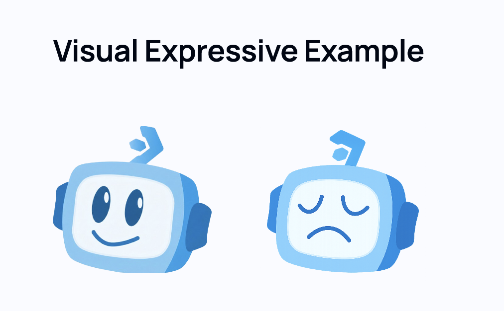
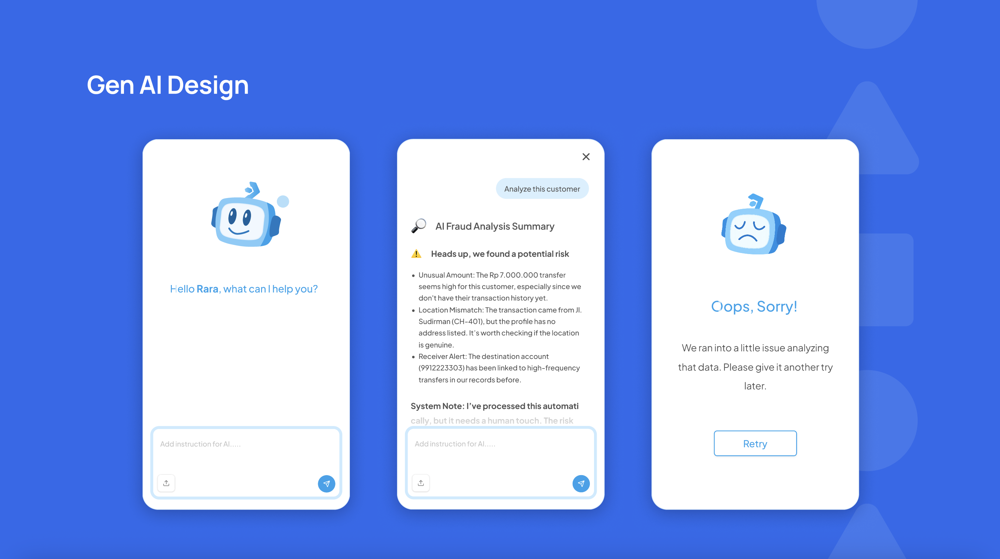
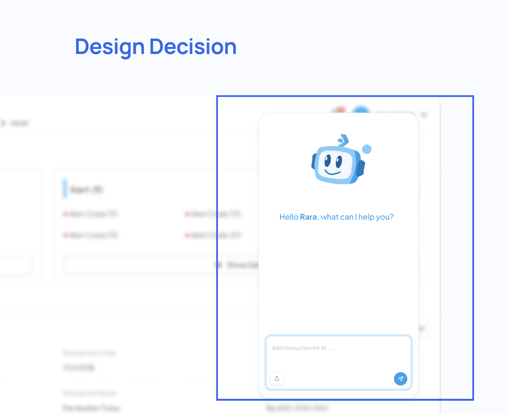

Problem Statement
How might we design Gen AI so it feels approachable, trustworthy, and helpful for analysts in a digital lending platform?
Key Paint Points
- Cognitive overload from multiple alerts
- Difficulty understanding AI-generated signals
- Low confidence in AI recommendations
- Limited AI feature adoption
Goals & Success Metrics
Business Goals
- Increase AI feature adoption
- Reduce analysis time
- Improve decision accuracy
Users Goals
- Understand risk faster
- Feel supported, not replaced by AI
- Ask questions in natural language
UX Success Metrics
- Task completion time
- Frequency of AI interactions
- Qualitative user confidence feedback
UX Strategy : AI as a Companion
Gen AI should behave like a teammate, not just a tool.
Strategy Approach
Position AI as:
- A trusted companion
- A co-pilot for analysis
- A discussion partner
Solution
Developing an application mascot to position Generative AI as a supportive partner, guiding users through seamless platform navigation and complex tasks.
Why Mascott?
- Humanizes AI interaction
- Builds emotional trust
- Reduces user resistance
- Makes AI feel approachable
Mascot Concept & Personality
Personality Traits
- Friendly but professional
- Calm and supportive
- Confident but not authoritative
Tone of Voice
- “I can help summarize this for you.”
- “This transaction looks risky because…”
- “Would you like a deeper explanation?”

Gen AI Design


Design Decision
- AI Assistance panel placed on the right for easy access
- Mascot is visible but non-intrusive
- Chat-based interaction for flexibility
- Context-aware AI responses
Impact & Result
User Impact
- Reduced cognitive load
- Faster understanding of fraud cases
- Increased confidence in decision-making
Business Impact (Projected)
- Faster case resolution
- Higher AI adoption
- Reduced operational cost
Learning & Reflection
- Designing AI is about trust, not just accuracy
- Emotional design plays a major role in AI adoption
- Mascots can be a strategic UX tool, not a gimmick
- Contextual AI beats generic chatbots